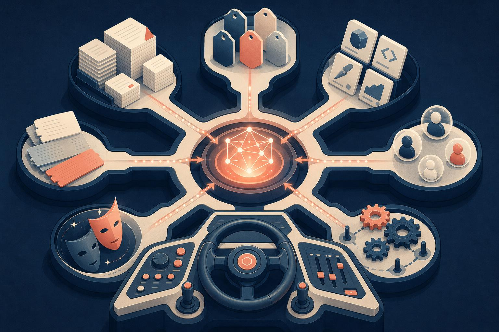

Anthropic이 Claude Code에 지시 넣는 법을 정리했다. 방법이 일곱 가지다. CLAUDE.md, rules, skills, subagents, hooks, output styles, 시스템 프롬프트 덧붙이기. 처음 보면 같은 말을 왜 일곱 군데서 하나 싶은데, 읽고 나면 핵심은 하나다. 같은 지시라도 어디에 두느냐에 따라 토큰 비용이랑 준수율이 완전히 달라진다는 것. 저도 CLAUDE.md에 온갖 규칙을 쌓아둔 적이 있는데, 어느 순간 200줄을 넘어가더라. 정작 중요한 지시는 묻혀서 안 지켜지고 (긴 세션에서 특히). 그래서 이 글은 “무엇을 쓰느냐”가 아니라 “그 지시를 어느 채널에 배치하느냐”의 지도다. 원문에 표 하나로 요약해둔 게 있는데, 사실 그 표가 결론이다.

일곱 채널을 한 장으로
| 방법 | 로드 시점 | Compaction 동작 | 컨텍스트 비용 | 언제 쓰나 |
|---|---|---|---|---|
| CLAUDE.md (루트) | 세션 시작, 내내 상주 | 메모이즈. 1회 읽고 캐시, compaction 후 재로드 | 높음. 관련 없어도 모든 줄이 토큰 | 빌드 명령, 디렉터리 구조, 모노레포 레이아웃 |
| CLAUDE.md (하위) | 해당 디렉터리 파일 읽을 때 | 그 디렉터리 안 건드리면 사라짐 | 낮음. 작업 중일 때만 | 특정 하위 디렉터리 전용 규칙 |
| Rules | 세션 시작(전역) 또는 매칭 파일 접근 시 | compaction 때 재주입 | 중간. 경로 스코프 아니면 상시 | Zod 입력 검증 같은 구체적 제약 |
| Skills | 이름·설명만 세션 시작, 본문은 호출 시 | 호출된 스킬 재주입, 예산 넘으면 오래된 것부터 탈락 | 낮음. 호출 시에만 | 배포·릴리스 체크리스트 같은 절차 |
| Subagents | 이름·설명·툴만 세션 시작, 본문은 Agent 호출 시 | 최종 메시지만 본 세션으로 복귀 | 낮음. 호출 전까지 0 | 격리 실행 곁일(딥서치, 로그 분석) |
| Hooks | 라이프사이클 이벤트에 발화 | compaction 자체를 우회 | 낮음. 설정이 컨텍스트 밖에 | 결정론적 자동화(린터, Slack 알림) |
| Output styles | 세션 시작, 시스템 프롬프트에 주입 | compaction 안 됨 | 높음. 단 기본 프롬프트를 덮어씀 | 역할 자체를 바꿀 때 |
| 시스템 프롬프트 append | 세션 시작, CLI 플래그 | compaction 안 됨, 해당 호출만 | 중간. 첫 요청 후 캐시 | 톤, 응답 길이, 포맷 |
이 표를 한번 머릿속에 넣으면, 아래는 전부 이 칸에 왜 이렇게 적혀 있는지 풀어쓴 거다.
CLAUDE.md: 항상 켜져 있어서 비싼 색인
CLAUDE.md는 프로젝트 루트의 마크다운 파일이다.
세션 시작에 로드돼서 끝까지 상주한다.
빌드 명령, 디렉터리 구조, 모노레포 레이아웃, 팀 컨벤션.
이런 “Claude가 항상 알아야 하는 사실”이 여기 들어가는 게 자연스럽다.
사실 문제는 이 파일이 주인 없는 config처럼 자란다는 거다.
팀마다 자기 지시를 하나씩 덧붙이고 아무도 지우질 않는다.
그 비용은 규모가 커지면 복리로 불어난다.
모든 줄이, 관련이 있든 없든, 그 레포에서 일하는 모든 엔지니어의 모든 세션에 로드된다.
토큰을 먹는 건 둘째치고, 정작 중요한 지시의 준수율까지 희석돼 버린다.
Anthropic 권고는 명확하다. 200줄 이하로 유지하고, 주인을 정하고, 코드처럼 변경을 리뷰하라.
이 파일을 “코드베이스 개요” 또는 “다른 파일을 가리키는 색인”으로 생각하라는 것.
모노레포라면 팀 디렉터리마다 하위 CLAUDE.md를 두고
claudeMdExcludes로 안 건드리는 팀 파일은 스킵할 수 있다.
보안·컴플라이언스처럼 조직 전체에 강제해야 하는 건
MDM으로 배포하는 중앙관리 CLAUDE.md에 넣으면 된다 — 개인 설정으로 제외할 수 없다.
Rules: 경로에 묶어두면 관련 없을 땐 조용함
Rules는 .claude/rules/에 놓는 마크다운이다.
Claude한테 구체적 제약이나 컨벤션을 주는 건데, 여기서 갈림길이 하나 있다.
스코프 없는 rule은 CLAUDE.md랑 기계적으로 똑같이 동작한다.
세션 시작에 상시 로드되고 compaction 때 재주입된다.
지금 작업이랑 무관해도 토큰을 잡아먹는 거다.
반면 경로 스코프 rule은 paths 필드로 로드 시점을 통제한다.
src/api/**에 스코프된 rule은 문서만 만지는 세션에서는 컨텍스트에 안 들어온다.
Claude가 src/api/ 파일을 읽을 때만 로드된다.
---
paths:
- "src/api/**"
- "**/*.handler.ts"
---
All API handlers must validate input with Zod before processing.판단 기준은 이렇다.
“마이그레이션은 append-only” 같은 파일 한정 제약이면 paths를 단 rule이 제일 맞다.
코드베이스 여러 구석 (전부는 아닌)에 걸치는 횡단 관심사면
중첩 CLAUDE.md보다 경로 스코프 rule을 먼저 써라.
Skills: 부를 때만 펼쳐지는 절차서
Skills는 .claude/skills/에 폴더로 사는 지시·스크립트 묶음이다.
각 스킬은 SKILL.md가 있고, 이름·설명·본문으로 구성된다.
핵심은 로드 방식인데, 세션 시작에는 이름이랑 설명만 로드된다.
본문은 스킬이 실제로 호출될 때만 펼쳐진다.
슬래시 명령으로 부르든, 작업이 자동 매칭되든.
/code-review를 예로 들면, 현재 diff를 리뷰하고 파일은 안 건드린 채 결과만 보고한다.
스킬이 플레이북을 정의해두니까 호출할 때마다 같은 구조화된 접근을 따르게 된다.
compaction 시에는 호출된 스킬들을 공유 예산 한도까지 재주입하는데
한 세션에서 스킬을 많이 불렀다면 오래된 것부터 빠진다.
판단 기준은 간단하다.
배포 워크플로우, 릴리스 체크리스트, 리뷰 프로세스 같은 절차적 지시는
CLAUDE.md가 아니라 스킬에 넣어라.
이 블로그 굽는 데 쓰는 blogloop도 정확히 이 부류다.
절차를 파일로 박아두고 매번 같은 루프를 도는 거다.
Subagents: 격리된 방으로 보내는 곁일
Subagents는 .claude/agents/의 마크다운이다.
특정 곁일을 맡는 격리된 어시스턴트를 정의하는데
YAML frontmatter(이름, 설명, model·툴 접근)와 본문으로 구성된다.
본문이 그 subagent의 시스템 프롬프트가 된다.
스킬이랑 닮았다. 이름·설명·툴 목록만 세션 시작에 로드된다.
근데 결정적 차이가 하나 있다.
subagent의 본문은 자동 호출되지 않을 뿐 아니라 부모 대화에 아예 들어오지도 않는다.
Claude가 Agent 툴로 프롬프트를 넘겨서 부르면
subagent는 자기만의 새 컨텍스트 창에서 돌아간다.
본 세션으로 돌아오는 건 최종 메시지(보통 여러 하위작업을 집계한 결과)랑 메타데이터뿐이다.
이 패턴은 규모로 확장된다.
subagent는 5단계까지 중첩될 수 있고
동적 워크플로우는 수십에서 수백 개의 백그라운드 에이전트를 오케스트레이션한다
— 각 subagent 아키텍처를 일일이 지정하지 않고도.
오케스트레이션 계획이랑 중간 결과가 스크립트 변수에 살지
Claude의 컨텍스트 창에 살지 않는 게 핵심이다.
그래서 지시 충실도를 잃지 않고 규모를 낼 수 있다.
skill이냐 subagent냐를 가르는 건 결국 ‘격리’다. 딥서치·로그 분석·의존성 감사처럼 다시 안 볼 중간 결과로 본 대화를 어지럽힐 곁일은 subagent로. 절차가 본 스레드 안에서 펼쳐져서 매 단계를 조종하고 싶으면 skill로.
Hooks: 모델이 아니라 하네스가 강제하는 것
Hooks는 파일 편집·툴 호출·세션 시작 같은
Claude 라이프사이클 이벤트에 발화하는 명령·HTTP 엔드포인트·LLM 프롬프트다.
settings.json에 등록하거나 관리형 정책, skill/agent frontmatter에 넣는다.
종류는 command, HTTP, mcp_tool, prompt, agent 다섯 가지.
전부 결정론적으로 트리거되는데
앞의 셋은 실행 자체가 결정론적이고
뒤의 둘은 Claude의 판단으로 출력을 정한다.
hook의 컨텍스트 비용이 낮은 이유는 설정과 지시가 본 창 밖에 있기 때문이다.
하네스가 핸들러를 돌리거나 별도 창에서 모델을 호출한다.
여기가 CLAUDE.md·rules·skills와 근본적으로 다른 지점이다.
대부분의 hook은 출력이 본 창에 저장되지 않는다.
차단성 hook의 stderr는 왜 막혔는지 Claude가 알아야 하니까 저장되지만
PreCompact로 채팅 기록을 백업해뒀다면 Claude는 그 파일이 어디 있는지 모른다.
핵심 권고는 이거다.
결정론적으로 일어나야 하는 건 전부 hook으로 보내라.
편집 후 린터, 완료 시 Slack 알림, 특정 명령 차단.
PreToolUse hook은 어떤 툴 호출이든 검사해서 exit code 2로 거부할 수 있다.
모델이 포매터를 돌리기로 선택하는 것하고
포매터가 자동으로 돌아가는 건 전혀 다른 얘기다.
Output styles와 append: 시스템 프롬프트를 건드리는 두 방식
Output styles는 시스템 프롬프트에 지시를 주입한다.
compaction되지 않고 매 세션 시작에 로드되며 첫 요청 후 캐시된다.
컨텍스트 비용은 중간 정도인데
시스템 프롬프트에 앉아 있으니까 지금까지 다룬 어떤 방법보다 준수 가중치가 높다.
그래서 신중하게 써야 한다.
주의할 함정이 하나 있는데
output style을 바꾸면 기본 output style을 대체해 버린다
(frontmatter에 keep-coding-instructions: true를 걸지 않는 한).
Claude Code에서 이건 “너는 소프트웨어 엔지니어링을 돕는다”는 지시가 날아간다는 뜻이다.
기본값으로는 커스텀 output style이 기본 지시를 다 떨궈서
Claude Code가 범용 어시스턴트가 돼버린다.
커스텀 쓰기 전에 빌트인부터 봐라 — Proactive, Explanatory, Learning 세 개가
자율성·교육 모드·협업 코딩이라는 제일 흔한 수요를 커버한다.
덜 위험한 대안이 append-system-prompt 플래그다.
output style 파일을 고치면 큰 변화가 날 수 있는 반면
append 플래그는 원래 시스템 프롬프트에 더하기만 한다.
역할을 바꾸지 않고 지시를 얹는 거다.
호출 시점에 전달되고 그 호출에만 적용되며 파일로 지속되지 않는다.
다만 준수에는 체감이 있다.
이 방법으로 지시를 많이 넣을수록 Claude는 덜 엄격하게 따른다.
특히 모순되는 지시가 섞이면.
이럴 때 옮겨라
원문 마지막의 안티패턴 체크리스트가 실전에서 제일 쓸모 있다. 아래 습관이 보이면 지시의 위치를 바꿀 타이밍이다.
CLAUDE.md에 “매번 X면 항상 Y 해라” — 신뢰성 있게 일어나야 하면 hook이다. 모델이 포매터를 고르는 것하고 포매터가 자동으로 도는 건 다르다.
CLAUDE.md에 “절대 이건 하지 마” — 지시는 틀린 도구다. Claude는 대체로 따르긴 하는데 긴 세션·모호한 상황·프롬프트 인젝션 앞에서 무너진다. 진짜 가드레일은 결정론적이어야 한다 — hook이랑 permission으로. 조직 전체 강제는 관리자 배포 managed settings가 유일한 길이다.
CLAUDE.md에 30줄짜리 절차 — 절차는 skill로 빼라.
CLAUDE.md는 항상 들고 있어야 할 사실의 자리다.
배포 런북이나 보안 리뷰 체크리스트는 .claude/skills/에 넣어서
호출 시에만 로드되게 하는 게 맞다.
paths 없는 API 전용 rule — src/api/**에만 적용될 거면 paths:로 스코프를 잡아라.
스코프 없는 rule은 CLAUDE.md에 박은 것과 똑같다.
프로젝트 CLAUDE.md에 개인 취향 — 모든 파일 기반 방법에는 유저 레벨 짝이 있다. 개인 취향은 로컬 파일에, 팀 전체 한정 선호는 프로젝트 파일에.
일곱 가지가 손에 익으면 plugin으로 묶어서 팀이나 프로젝트 전체에 일관된 셋업을 공유할 수도 있다.
결국 위치 설계다
이 글을 관통하는 감각은 하나였다. Claude Code를 길들인다는 건 더 강한 문장을 쓰는 게 아니라 각 지시를 컨텍스트의 어느 층위에 앉힐지 결정하는 일이라는 것. 항상 켜둘 사실인가 (CLAUDE.md), 특정 경로에서만 깨어날 제약인가 (rule), 부를 때만 펼칠 절차인가 (skill), 격리된 방으로 보낼 곁일인가 (subagent), 모델의 선택이 아니라 코드로 강제할 규칙인가 (hook). 이 질문에 답하는 순간 지시는 제자리를 찾는다. 그리고 조용한 경고가 하나 깔려 있다. “절대 하지 마”를 프롬프트로 적는 건 가드레일이 아니라 부탁이다. 진짜로 못 하게 막아야 하는 건 결정론적 장치로 내려야 한다. 모델은 대체로 말을 잘 듣는다. 근데 ‘대체로’에 기대는 순간 그 시스템은 압박 상황에서 무너진다. 어디에 두느냐가 승부인 이유다.